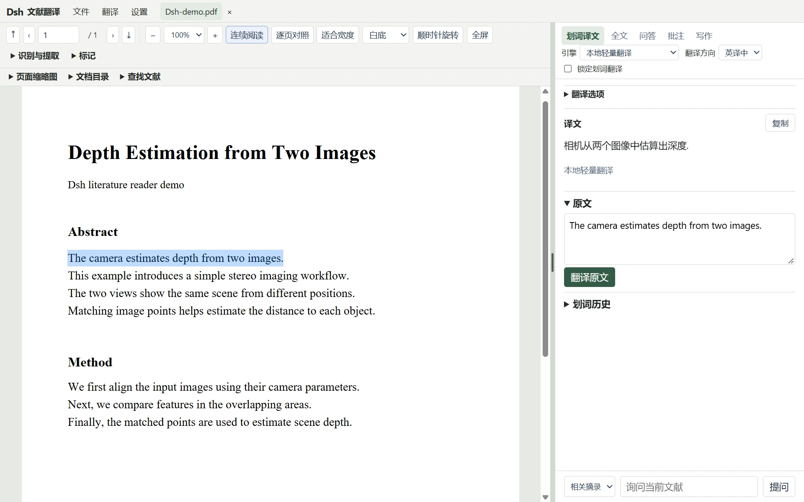

Dsh 文献翻译
Windows PDF 阅读器。选中文字，侧栏自动显示译文。支持离线英译中、全文翻译、文献问答和 PDF 批注。

阅读与翻译
- 阅读
- 滚轮连续跨页，Ctrl + 滚轮缩放。划词后无需再点翻译。
- 全文翻译
- 暂停后可继续，支持逐页对照，导出 TXT 或双语 PDF。
- 文献问答
- 以当前 PDF 的摘录提问，点击参考页回到原文。可用内置 Qwen 或自配模型。
- 保存批注
- 高亮、附注和译文可写入 PDF，也可以另存副本。
下载与源码
- Windows x64
- 查看发布版本
安装版可从开始菜单启动。便携版需完整解压后运行。